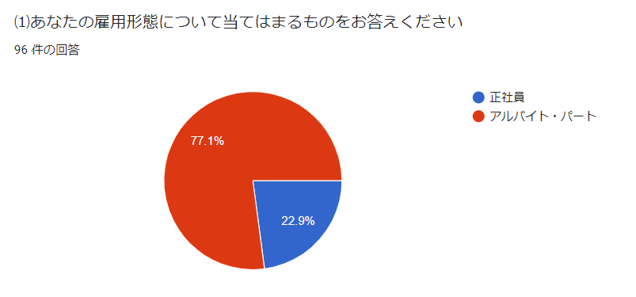
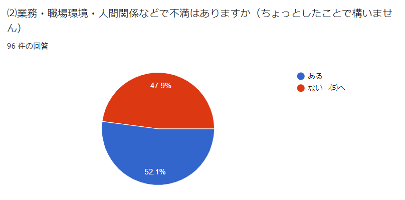
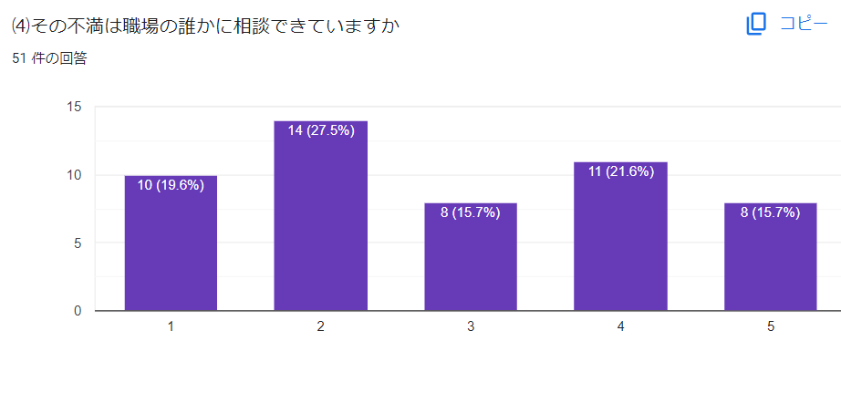
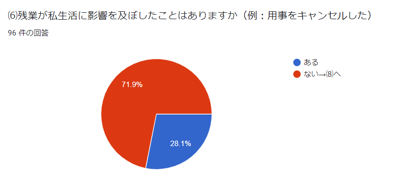
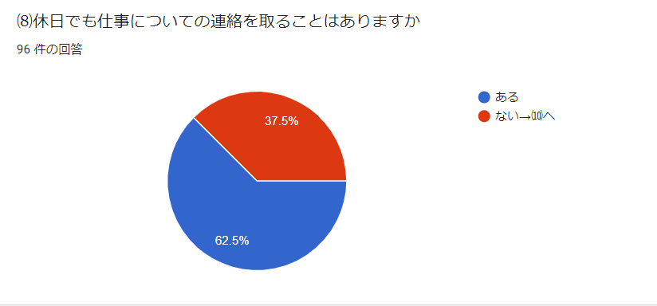
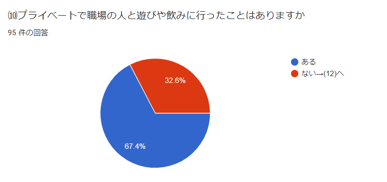

フィールドワーク
独自のアンケートを実施


実際の不満などの回答
→シフト人数が少ない、業務中のおしゃべり
残業が多い
人間関係でストレスを感じる
同世代の方と話す機会が少ない日があり、充実感が感じられない
パワーハラスメント
男性上司からの嫌な態度
店長と気が合わない
（一部抜粋、有効回答48件）

（1:できている ~ 5:できていない、5段階で評価）
5問目では自分の意見を職場の誰かに伝える方法・機会はあるかどうかを質問
→LINE、ミーティング、面談（数か月に1度や年に1度など）、相談窓口
（一部抜粋、有効回答69件）

実際の影響
→睡眠不足、学校に遅刻、会社を辞める、用事をキャンセル、
家族との時間が減少、家事がおろそかになった
（一部抜粋、有効回答26件）

どのような連絡があったか
→シフトについて、予定の変更、他の人ではわからないこと、クレーム対応
（一部抜粋、有効回答58件）
